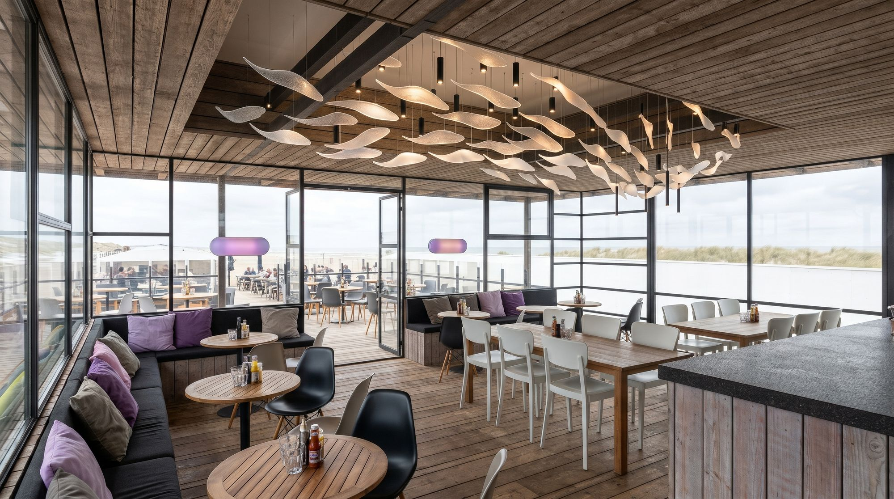

Lichtconcept voor een strandpaviljoen
Voor een pitch voor een nieuw strandpaviljoen tussen de duinen en de zee maakte ik het lichtontwerp. Het concept van het paviljoen is dat het meebeweegt met de weersomstandigheden. Het lichtontwerp volgt dat idee: natuur en duurzaamheid spelen de hoofdrol.
De zon was de inspiratie. Het licht volgt de verandering van de zon gedurende de dag: met verschillende lichtscènes verandert het kleurbeeld mee met het natuurlijke licht, van helder overdag tot warm en gedimd bij zonsondergang. Het paviljoen zelf wordt subtiel uitgelicht, zodat het landschap de hoofdrol blijft spelen.
Het lichtplan is opgebouwd in lagen: basisverlichting, het uitlichten van de ruimte en een eyecatcher. Boven het restaurant zweeft een golvende plafondinstallatie die het licht speels door de ruimte verdeelt, naar de kernwaarde ‘play of brilliance’ van lichtontwerper Richard Kelly. Eyecatchende armaturen die worden opgeladen door de zon onderstrepen het duurzame karakter van het ontwerp.
De opdracht is uiteindelijk aan een andere partij gegund, dus dit ontwerp is niet gebouwd. Ik laat het toch graag zien, omdat het goed toont hoe ik van een eerste idee tot een compleet lichtplan kom.
De zon als inspiratie- en energiebron.
Impressies van het ontwerp
Uit het ontwerpproces
Van concept en brainstorm tot lichtbeeld, lichtplan en eyecatcher: zo kwam het lichtontwerp stap voor stap tot stand.